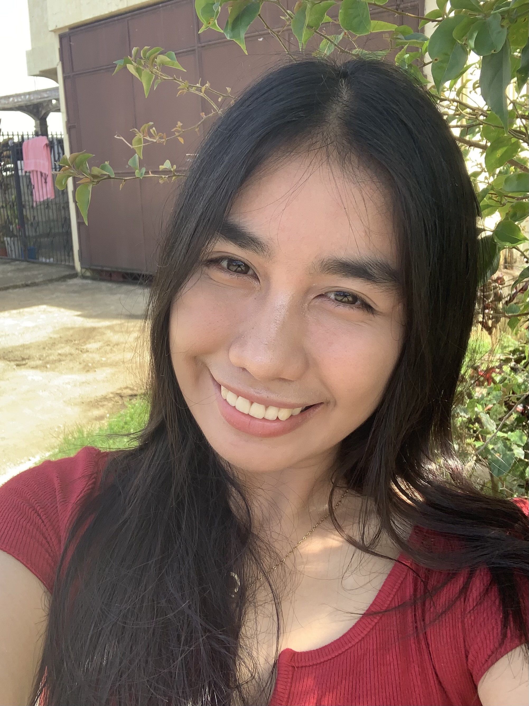

A little glimpse about me♡
I am a pretty simple, clumsy, and curious person who loves enjoying the little things in life. I love eating, taking pictures, doing my makeup, petting cats whenever I see one, and especially listening to music. I also enjoy cooking and trying different hobbies, even when I don't really know how to do them yet. Sometimes I fail, sometimes I learn something new, but I still enjoy trying. I really like pink and brown, and I laugh really loud even when the joke isn't that funny. I also love peanut rolls, Jumpee, and dipping my biscuits deep into peanut butter because it just tastes better that way. I love pineapples too, so much that I can eat a whole one by myself, even when my tongue starts complaining afterward.
I can be very clumsy, and somehow I always end up breaking my phone. I also tend to zone out a lot, so when someone is talking to me, I can get really lutang without even realizing it. I even talk in my sleep sometimes, which is honestly kind of funny when I find out about it the next day. I love having my own time and being alone, but I also enjoy spending time with the people I care about. I am a sentimental person, so I always keep the little things people give me because they remind me of the person and the moment behind them. Even small things can mean a lot to me.
I am also someone who is better at memorizing things than mathematics, so numbers and I are not exactly best friends. I am quite sensitive too, and I can easily cry over little things. But I think that is also part of what makes me who I am. I may be clumsy, emotional, and not always good at everything I try, but I like discovering new things, learning along the way, and simply enjoying the little moments that make life special.

Here are some websites I like to visit: